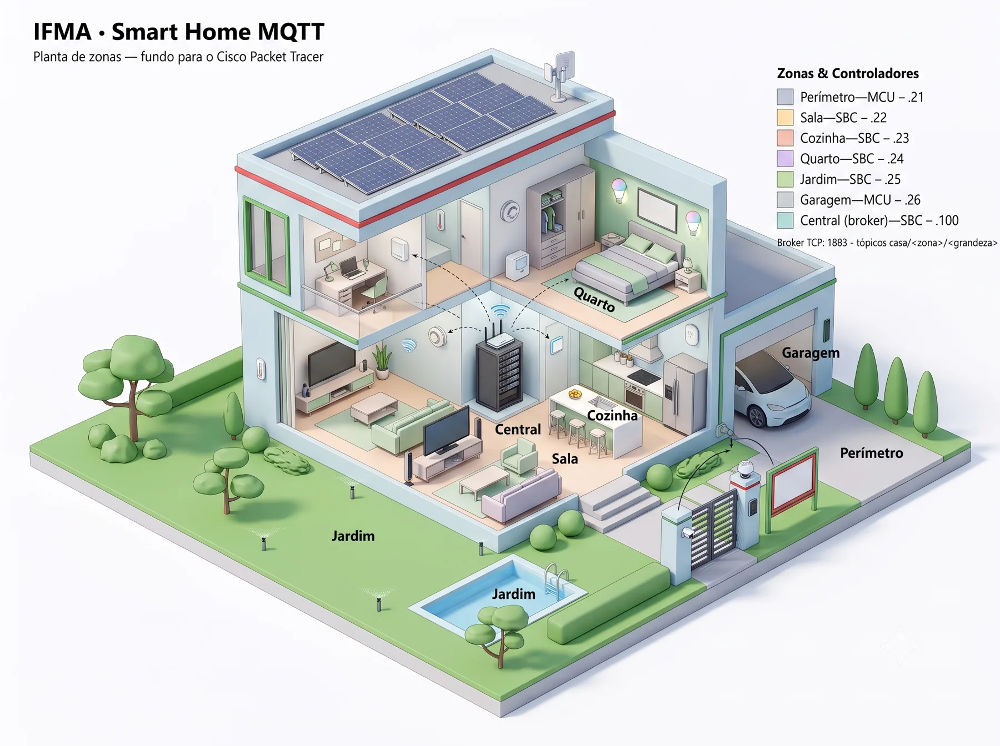
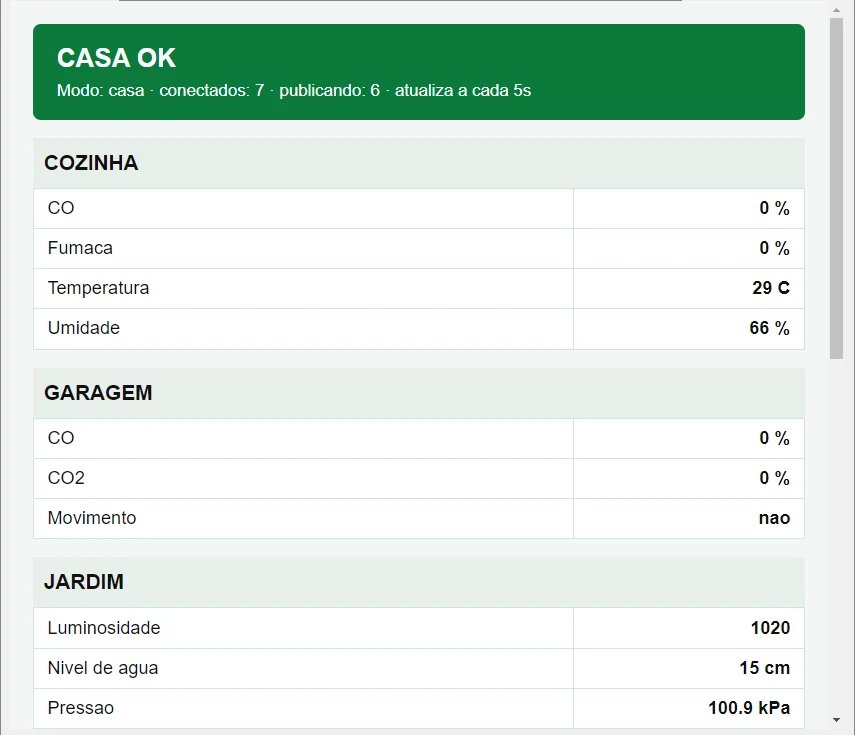

Sala
Liga o ar-condicionado e o ventilador a 30 °C e só desliga abaixo de 28 °C. O LED RGB mostra o estado.
casa/<zona>/<grandeza>
Seis controladores conversam com uma Central por publish/subscribe, dentro do Cisco Packet Tracer. Cada zona automatiza o próprio ambiente e, se a Central reiniciar, volta a conectar sozinha. Projeto de Redes e IoT de Claudio Fernandes, no IFMA Campus Monte Castelo.

Quando o simulador está aberto, a Central envia o estado da casa para este site, com a mesma informação do painel interno. É uma casa simulada: os valores vêm do Packet Tracer, sem sensores físicos.
Consultando o simulador...
O caminho do dado: de um script dentro do SBC simulado, RealHTTPClient envia o estado por HTTPS a uma função na nuvem, e esta página o consulta a cada 10 segundos. O simulador pede autorização antes de acessar cada endereço, e a chave de envio não é distribuída com o arquivo da turma.
Escolha uma situação para ver o LCD da Central, a faixa do painel web e o trecho do log. Tudo vem da bancada de 3 de novembro de 2026.
21:47:31 Broker ouvindo na porta 1883 21:47:31 Painel web em http://192.168.1.100:80 21:47:31 CASA OK | Modo normal 21:47:32 Zona conectada: 192.168.1.22
É uma reprodução de registros reais, e não muda com o simulador. A faixa foi recriada a partir do painel, e a captura original está mais abaixo.
Cada zona lê seus sensores e aciona seus atuadores no próprio controlador. A rede leva o estado para a Central e traz os comandos.
Liga o ar-condicionado e o ventilador a 30 °C e só desliga abaixo de 28 °C. O LED RGB mostra o estado.
Com fumaça ou CO a partir de 20 %, aciona juntos sprinkler, janela, exaustor e alarme. Ignora o modo viagem.
Climatização, umidificador e luz de presença: o LED só acende com movimento e ambiente escuro.
Estação meteorológica. Irriga com até 15 cm de água, drena a partir de 80 cm e acende a luminária ao escurecer. Ignora o modo viagem.
Com CO ou CO₂ a partir de 20 %, abre a porta, liga o exaustor e toca o alarme.
Campainha, movimento e porta de entrada. O leitor RFID é um nó próprio, que publica o cartão lido.
Recebe as publicações, cruza as zonas e decide o alerta. Controla o LCD e o Home Speaker e serve o painel web.
O Packet Tracer não tem um pacote mqtt acessível por script. Por isso, o padrão foi reproduzido sobre tcp e json, na porta oficial 1883: cada mensagem é {"topic": "casa/sala/temp", "payload": 27}.
Packet Tracer 9.0.1.0858, em 3 de novembro de 2026.
| Item | Resultado |
|---|---|
| Abertura do arquivo | Os 7 nós conectam sozinhos, cerca de 25 s depois de abrir, sem nenhuma mensagem descartada |
| Central reiniciada | Os 7 nós voltam em 3 s |
| Temperatura | Sobe a cerca de 2,4 °C/min e acompanha a curva de São Luís: 27,9 °C medidos e 27,9 °C previstos |
| Ar-condicionado | Liga na hora prevista. Em 8 ciclos, fica entre 28,5 e 30,3 °C e volta à curva: 30,71 °C contra 30,73 °C |
| Fumaça e CO | Atuadores da Cozinha e da Garagem visíveis na planta, e ALERTA DE GAS na Central |
| Modo viagem | Movimento em Sala, Quarto e Garagem vira INTRUSAO! no LCD e no painel. Em casa, a Sala e o Quarto não alertam |
| Cartão | O válido abre e fecha a porta. O inválido não trava o LCD. O alerta de gás passa na frente do aviso de acesso |
| Saída para a internet | Um script no SBC buscou este site por HTTPS (200) e enviou dados à função na nuvem, depois da autorização pedida pelo simulador |
| Central desligada | Perímetro, Garagem e Quarto seguem reagindo a movimento e campainha, com aviso de que estão sem broker |
| Old Car | Com o carro ligado, a Garagem cruza 20 % e a Central dá ALERTA DE GAS; com ele desligado, a casa volta ao normal em cerca de 20 s |
| Versão Linux | O mesmo arquivo mostrou conectados: 7 · publicando: 6 no PT 9.0.1 para Linux |

O Packet Tracer raramente dá erro. Quase tudo abaixo apareceu como um log dizendo que funcionou, enquanto nada acontecia.
Irrigacao: LIGOU
O sprinkler pede customWrite. Com digitalWrite, o script seguia e o log confirmava, mas ele nunca jorrava. Antes de programar um dispositivo, leia as seções Local Control e Data Specifications na aba Specifications dele.
Reconectando ao broker...
connect() nunca conectaA zona que sobe antes da Central fica tentando para sempre com o mesmo TCPClient. A solução é fechar e criar um cliente novo a cada tentativa. Foi isso que acabou com o Stop e Run manual.
nivel=0
Com 42 cm de água no ambiente, o Water Level Monitor lia 0. Se a documentação diz Direct Control: N/A, ele só mostra o valor. O dado vem de Environment.get("Water Level").
alarme ainda ligado
Parar o script não desliga o pino. Por isso, cada zona precisa deixar os atuadores em estado conhecido quando começa a rodar.
Temp 2C
Reinstalar o simulador devolve o clima de fábrica, que fica em 0 °C à noite. Importe o clima no contêiner onde estão os dispositivos e salve: o arquivo guarda o ambiente.
Smoke Detector = -1
Environment.get() não dá erro quando o nome está errado. Um valor negativo pode ser só um nome digitado errado.
O sistema funciona, e estes pontos continuam em aberto.
Em bancada ou aula: feche o Packet Tracer a cada 45 minutos. Reabrir o arquivo não devolve a memória. Só fechar o programa resolve.